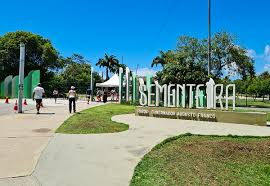

Sementeira

O porque pode ser utilizado pelos aracajuanos e turistas para prática de atividades esportivas e de
lazer,pesquisas ambientais,além de outras atividadade em contato com a natureza. O espeços conta
Atrativos do Parque da Sementeira
- Parque infantil
- Campo de futebol
- Quadra poliesportiva
- Aparelhos para exercicios fisicos
- Pista para caminhada
- Quioques para piqueniques
- Sanitários
- Lagos e áreas verdes
- Iluminação adequada para visitas noturnas